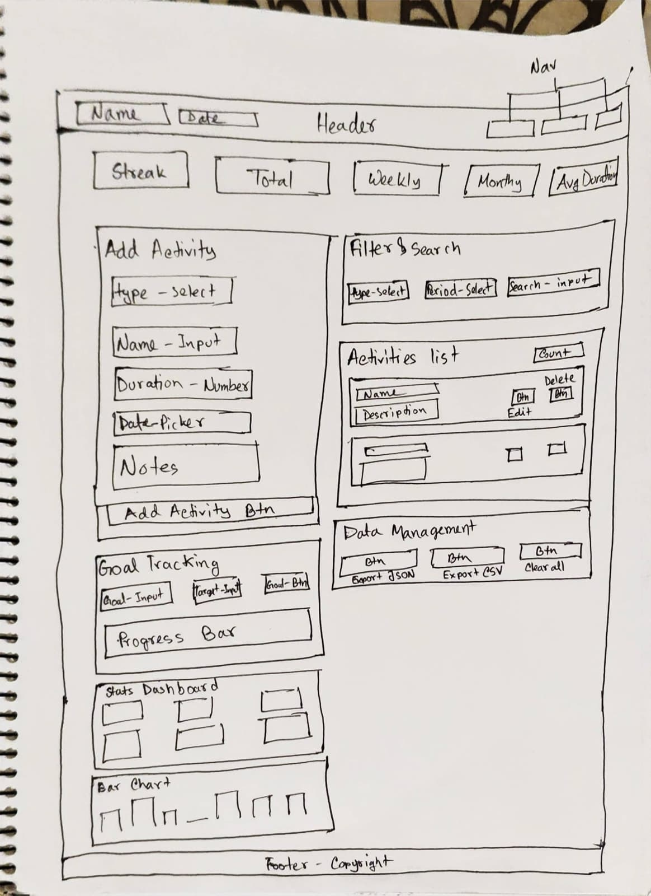

Planning & Design Document
1. Project Overview
FitTrack is a comprehensive fitness and habit tracking web application designed to help users monitor their workouts, build healthy habits, set goals, and visualize their progress over time. The application is built entirely with HTML5, CSS3, and JavaScript with no frameworks or external libraries are used for functionality.
2. Development Approach
2.1 Phase-Based Development Strategy
Before starting development, the entire project was broken down into 9 distinct phases. This structured approach was used to ensure steady progress, reduce complexity, and avoid becoming overwhelmed during development.
Each phase focused on a specific set of features or improvements, such as building the core layout, implementing activity tracking, adding editing functionality, and later enhancing the application with statistics, filtering, and data management.
By developing the application step by step, it became easier to:
- Maintain clarity on what needed to be built next
- Debug issues without affecting the entire system
- Test features incrementally after each phase
- Gradually improve both functionality and user experience
This phase-based workflow helped ensure the project remained organized, manageable, and scalable throughout the development process.
2.2 Phase Overview
- Phase 1: Setup + Activity Form + Display List
- Phase 2: Activity functionality
- Phase 3: Data storage with localStorage
- Phase 4: Edit and delete features
- Phase 5: Statistics and summary bar
- Phase 6: Filtering and search
- Phase 7: Goal tracking + Streak Counter
- Phase 8: Charts and Analytics Dashboard
- Phase 9: Data management, Confirmation Modals and final polish
3. Wireframe Descriptions
3.1 Main Tracker Page (index.html)

Layout Decision: A two column layout was chosen so users can add activities on the left while viewing their activity list on the right. On mobile, this collapses to a single column for optimal readability.
3.2 Streak Bar
Positioned prominently at the top of the content area to provide instant motivation. The streak counter uses a fire emoji and bold numbers to create a sense of achievement. The four quick stat items (streak, total, weekly, monthly, avg duration) give users an at a glance overview.
3.3 Activity Cards
Each activity is displayed as a card with a colored left border indicating its type (teal for workouts, purple for habits). Cards show all relevant information (name, type badge, date, duration, notes) with edit and delete action buttons.
4. Design Choices
4.1 Typography
Font: Inter (Google Fonts) chosen for its excellent readability on screens, clean geometric design, and wide weight range. It conveys a modern, professional feel appropriate for a productivity tool.
4.2 Layout Strategy
Mobile-First Responsive: The CSS is written mobile first, with media queries adding complexity for larger screens. The two column grid activates at 900px width. CSS Grid and Flexbox are used throughout for clean, flexible layouts.
4.3 Component Design
Card-Based UI: All content sections use a card pattern with consistent border radius, padding, and subtle shadows. This creates visual hierarchy and groups related content together.
4.4 Interaction Patterns
- Form Validation: Realtime validation with clear red error messages below each field
- Edit Flow: Clicking edit prefills the form and changes the submit button text to "Update"
- Delete Confirmation: A modal dialog prevents accidental deletion
- Success Feedback: Green success messages confirm completed actions
5. Color Palette
Color Rationale
The palette was chosen to create clear visual distinction between activity types while maintaining a professional, motivating feel. Teal represents physical workouts (associated with health/vitality), while purple represents habits (associated with mindfulness/growth). The dark navy header provides strong contrast, and the off-white background ensures readability during extended use.
6. Accessibility Considerations
- All form inputs have associated labels for screen reader compatibility
- Interactive elements have visible focus states
- Error messages are associated with their respective form fields
7. Data Architecture
Activities are stored as an array of objects in localStorage with the following structure:
{
id: "unique-timestamp-based-id",
type: "workout" | "habit",
name: "Activity Name",
duration: 30,
date: "2026-04-09",
notes: "Optional notes",
createdAt: "ISO timestamp"
}
Goals use a separate localStorage key with a similar object structure including name, target value, and current progress tracking.